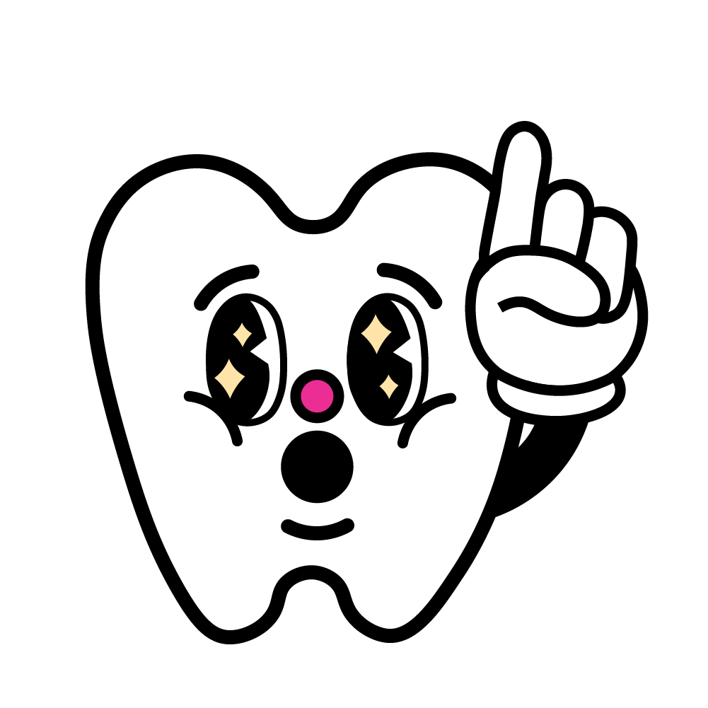

WHO ARE WE?

Ang IPINasaya ay galing sa salitang, “ipin” at “saya”, na nangangahulugang masayang ngipin. Ang layunin ng website na ito ay matulungan ang mga Pilipino na mapanatiling malinis ang kanilang mga ngipin at makamit ang pagkakaroon ng perpekto at masasayang mga ngiti. Sa pamamagitan ng website, makatutulong ito sa pag-promote ng dental health sa mga Pilipino sa paraan na mas mapapadali nitong maipamahagi ang mga impormasyon tungkol sa basic oral health care. Maaari itong gamitin ng mga non-government organizations na magsasagawa ng mga dental missions at turuan ang mga komunidad na pagbibigyan nila ng serbisyo.